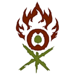

Azorius

"Philosophically, the largest overlap between the two colors stems from a similar motivation.
Both colors want to improve the world. White does this in its quest to promote peace, while Blue
does it out of its interest in reaching perfection. The end result is the same. Both colors like
to force its rules and ways upon all those around them"
Dimir

Dimir's guildmages use their magic to influence the minds of others. They can send messages to
operatives over distances, strike people with amnesia, magically alter memories, or even perform
lobotomies on victims to cover their tracks. The Dimir also practice necromancy, creating undead
minions such as skeletons and wights to carry out missions. Such minions are employed as they are
single-minded, easy to create and dispose of, cannot be interrogated in the event of capture and are
easily blamed on the Golgari instead. Spirits are also used by the Dimir to pass on messages, carry
out surveillance invisibly, or even to possess important figures such as judges and senators. Nobody
is beyond the reach of House Dimir.
Rakdos

Rakdos embodies hedonism and is known for his capricious cruelty and megalomania. Older than the
Guildpact itself, Rakdos is an ancient, powerful, and evil demon who personifies the chaotic fury of
red mana and the death and defilement of black.[7] He is also a consummate entertainer, whose mere
appearance is an act of grisly performance art. A monstrous figure standing thirty feet tall,
spreading enormous wings, crowned with fire and swinging a flaming scythe, Rakdos demands the
spotlight. His every entrance is a showstopper.[8] Rakdos' armour resembles the signet of the Rakdos
guild.
Gruul

Before and for a short time after the signing of the Guildpact, the Gruul Clans were a wild and
noble guild charged with maintaining the wild places on Ravnica.[1] They were supposed to keep
civilization in check. Civilization and the other nine guilds, however, overran every wild place
on the plane. This changed the Gruul.[2]
As the wilds were torn down, so too were the Gruul's responsibilities taken from them. The Simic
claimed jurisdiction over nature's future. The Selesnya preached about nature in order to bring
it into its conclave. With their responsibilities taken over by others, they were seen as
outside of the Guildpact and the Azorius began to write them out of the law. Outside the law,
the Boros were not required to protect them and the Orzhov were free to enslave them.
-
 Other guilds comming...
Other guilds comming...